import arviz as az
import pandas as pd
import matplotlib.pyplot as plt
import numpy as np
import pymc as pmdf = pd.read_csv("948363589_T_ONTIME_MARKETING.zip")df.head()| YEAR | QUARTER | MONTH | DAY_OF_MONTH | DAY_OF_WEEK | FL_DATE | MKT_UNIQUE_CARRIER | BRANDED_CODE_SHARE | MKT_CARRIER_AIRLINE_ID | MKT_CARRIER | ... | ARR_DELAY | ARR_DELAY_NEW | ARR_DEL15 | ARR_DELAY_GROUP | ARR_TIME_BLK | CANCELLED | CANCELLATION_CODE | DIVERTED | DUP | Unnamed: 60 | |
|---|---|---|---|---|---|---|---|---|---|---|---|---|---|---|---|---|---|---|---|---|---|
| 0 | 2018 | 4 | 10 | 18 | 4 | 2018-10-18 | UA | UA | 19977 | UA | ... | 6.0 | 6.0 | 0.0 | 0.0 | 1100-1159 | 0.0 | NaN | 0.0 | N | NaN |
| 1 | 2018 | 4 | 10 | 18 | 4 | 2018-10-18 | UA | UA | 19977 | UA | ... | -21.0 | 0.0 | 0.0 | -2.0 | 2100-2159 | 0.0 | NaN | 0.0 | N | NaN |
| 2 | 2018 | 4 | 10 | 18 | 4 | 2018-10-18 | UA | UA | 19977 | UA | ... | 10.0 | 10.0 | 0.0 | 0.0 | 1900-1959 | 0.0 | NaN | 0.0 | N | NaN |
| 3 | 2018 | 4 | 10 | 18 | 4 | 2018-10-18 | UA | UA | 19977 | UA | ... | -10.0 | 0.0 | 0.0 | -1.0 | 0900-0959 | 0.0 | NaN | 0.0 | N | NaN |
| 4 | 2018 | 4 | 10 | 18 | 4 | 2018-10-18 | UA | UA | 19977 | UA | ... | -10.0 | 0.0 | 0.0 | -1.0 | 1300-1359 | 0.0 | NaN | 0.0 | N | NaN |
5 rows × 61 columns
fig, ax = plt.subplots(figsize=(10,4))
msn_arrivals = df[(df["DEST"] == "MSN") & df["ORIGIN"].isin(["MSP", "DTW"])]["ARR_DELAY"]
az.plot_kde(msn_arrivals.values, ax=ax, bw=10)
ax.set_yticks([])
ax.set_xlabel("Minutes late")Text(0.5, 0, 'Minutes late')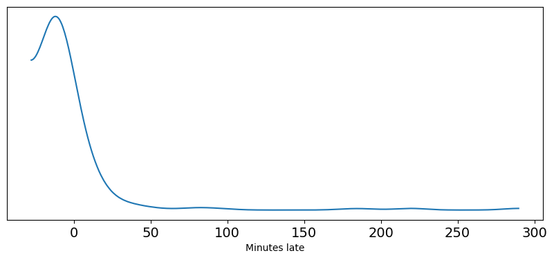
Code
with pm.Model() as normal_model:
normal_sd = pm.HalfStudentT("sd",sigma=60, nu=5)
normal_mu = pm.Normal("mu", 0, 30)
normal_delay = pm.Normal("delays",mu=normal_mu,
sigma=normal_sd, observed=msn_arrivals)
normal_prior_predictive = pm.sample_prior_predictive()
with pm.Model() as gumbel_model:
gumbel_beta = pm.HalfStudentT("beta", sigma=60, nu=5)
gumbel_mu = pm.Normal("mu", 0, 40)
gumbel_delays = pm.Gumbel("delays",
mu=gumbel_mu,
beta=gumbel_beta,
observed=msn_arrivals)
gumbel_prior_predictive = pm.sample_prior_predictive()Sampling: [delays, mu, sd]
Sampling: [beta, delays, mu]fig, axes = plt.subplots(1, 2, figsize=(10, 4))
prior_predictives = {"normal":normal_prior_predictive.prior_predictive, "gumbel": gumbel_prior_predictive.prior_predictive}
for i, (label, prior_predictive) in enumerate(prior_predictives.items()):
data = prior_predictive["delays"]
az.plot_dist(data, ax=axes[i])
axes[i].set_yticks([])
axes[i].set_xlim(-300, 300)
axes[i].set_title(label)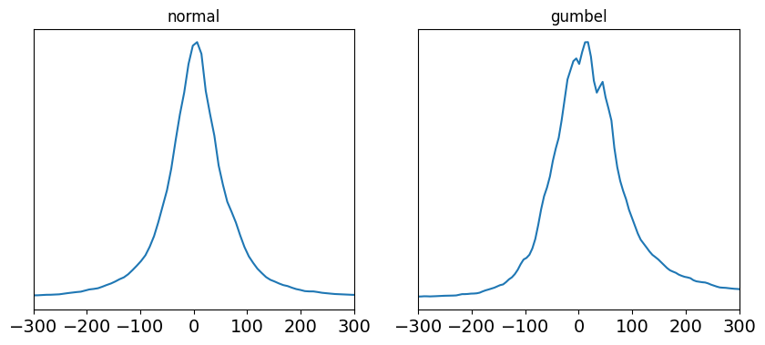
with normal_model:
normal_delay_trace = pm.sample(random_seed=0, chains=2)
az.plot_rank(normal_delay_trace)Auto-assigning NUTS sampler...
Initializing NUTS using jitter+adapt_diag...
Multiprocess sampling (2 chains in 4 jobs)
NUTS: [sd, mu]
Sampling 2 chains for 1_000 tune and 1_000 draw iterations (2_000 + 2_000 draws total) took 1 seconds.
We recommend running at least 4 chains for robust computation of convergence diagnostics
100.00% [4000/4000 00:00<00:00 Sampling 2 chains, 0 divergences]
array([<Axes: title={'center': 'mu'}, xlabel='Rank (all chains)', ylabel='Chain'>,
<Axes: title={'center': 'sd'}, xlabel='Rank (all chains)', ylabel='Chain'>],
dtype=object)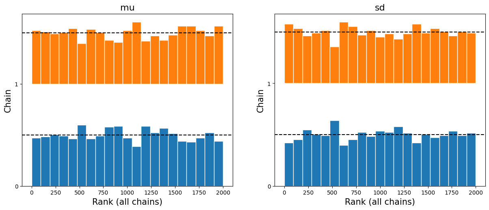
with gumbel_model:
gumbel_delay_trace = pm.sample(chains=2)
az.plot_rank(gumbel_delay_trace)Auto-assigning NUTS sampler...
Initializing NUTS using jitter+adapt_diag...
Multiprocess sampling (2 chains in 4 jobs)
NUTS: [beta, mu]
Sampling 2 chains for 1_000 tune and 1_000 draw iterations (2_000 + 2_000 draws total) took 0 seconds.
We recommend running at least 4 chains for robust computation of convergence diagnostics
100.00% [4000/4000 00:00<00:00 Sampling 2 chains, 0 divergences]
array([<Axes: title={'center': 'mu'}, xlabel='Rank (all chains)', ylabel='Chain'>,
<Axes: title={'center': 'beta'}, xlabel='Rank (all chains)', ylabel='Chain'>],
dtype=object)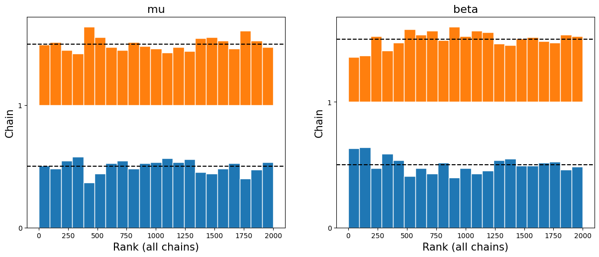
az.plot_posterior(normal_delay_trace)array([<Axes: title={'center': 'mu'}>, <Axes: title={'center': 'sd'}>],
dtype=object)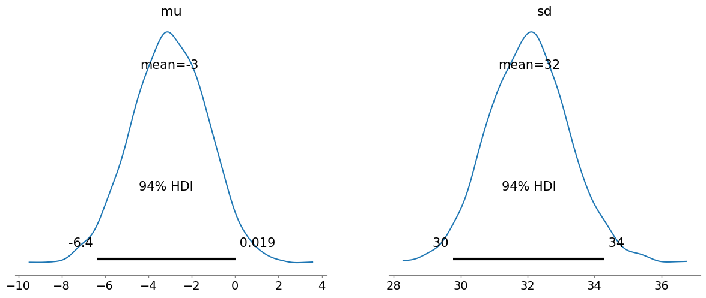
az.plot_posterior(gumbel_delay_trace)array([<Axes: title={'center': 'mu'}>, <Axes: title={'center': 'beta'}>],
dtype=object)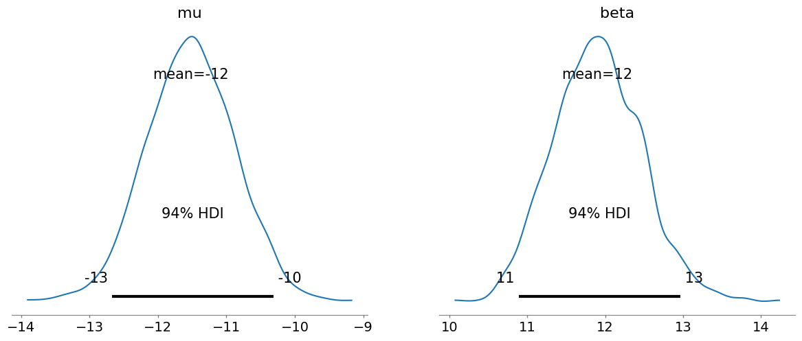
with normal_model:
normal_delay_trace = pm.sample(random_seed=0)
pm.sample_posterior_predictive(normal_delay_trace, extend_inferencedata=True)Auto-assigning NUTS sampler...
Initializing NUTS using jitter+adapt_diag...
Multiprocess sampling (4 chains in 4 jobs)
NUTS: [sd, mu]
Sampling 4 chains for 1_000 tune and 1_000 draw iterations (4_000 + 4_000 draws total) took 1 seconds.
Sampling: [delays]
100.00% [8000/8000 00:00<00:00 Sampling 4 chains, 0 divergences]
100.00% [4000/4000 00:00<00:00]
az.plot_ppc(normal_delay_trace, num_pp_samples=100)<Axes: xlabel='delays / delays'>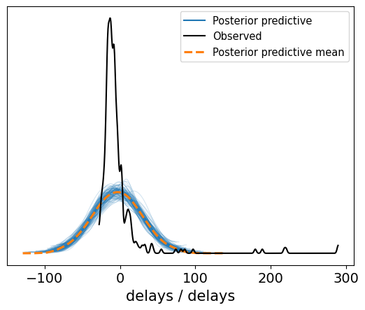
with gumbel_model:
gumbel_delay_trace = pm.sample(random_seed=0)
pm.sample_posterior_predictive(gumbel_delay_trace, extend_inferencedata=True)Auto-assigning NUTS sampler...
Initializing NUTS using jitter+adapt_diag...
Multiprocess sampling (4 chains in 4 jobs)
NUTS: [beta, mu]
Sampling 4 chains for 1_000 tune and 1_000 draw iterations (4_000 + 4_000 draws total) took 0 seconds.
Sampling: [delays]
100.00% [8000/8000 00:00<00:00 Sampling 4 chains, 0 divergences]
100.00% [4000/4000 00:00<00:00]
az.plot_ppc(gumbel_delay_trace, num_pp_samples=100)<Axes: xlabel='delays / delays'>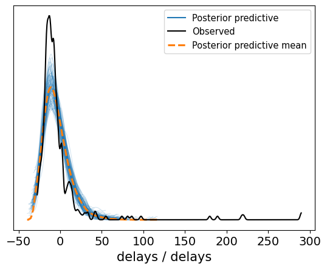
gumbel_late = gumbel_delay_trace.posterior_predictive["delays"].values.reshape(-1, 336).copy()
dist_of_late = (gumbel_late > 0).sum(axis=1) / 336
percent_observed_late = (msn_arrivals > 0).sum() / 336fig, axes = plt.subplots(1,2, figsize=(12,4))
az.plot_dist(dist_of_late, ax=axes[0])
axes[0].axvline(percent_observed_late, c="gray")
axes[0].set_title("Test Statistic of On Time Proportion")
axes[0].set_yticks([])
gumbel_late[gumbel_late < 0] = np.nan
median_lateness = np.nanmedian(gumbel_late, axis=1)
az.plot_dist(median_lateness, ax=axes[1])
median_time_observed_late = msn_arrivals[msn_arrivals >= 0].median()
axes[1].axvline(median_time_observed_late, c="gray")
axes[1].set_title("Test Statistic of Median Minutes Late")
axes[1].set_yticks([])[]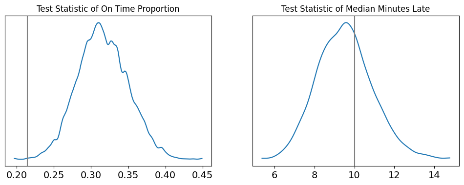
with normal_model:
pm.compute_log_likelihood(normal_delay_trace)
with gumbel_model:
pm.compute_log_likelihood(gumbel_delay_trace)
100.00% [4000/4000 00:00<00:00]
100.00% [4000/4000 00:00<00:00]
compare = az.compare({"normal": normal_delay_trace, "gumbel": gumbel_delay_trace}, ic="loo")
compare/Users/madschr.hansen/Library/Caches/pypoetry/virtualenvs/pymc-experiment-7JkXVX9c-py3.11/lib/python3.11/site-packages/arviz/stats/stats.py:803: UserWarning: Estimated shape parameter of Pareto distribution is greater than 0.7 for one or more samples. You should consider using a more robust model, this is because importance sampling is less likely to work well if the marginal posterior and LOO posterior are very different. This is more likely to happen with a non-robust model and highly influential observations.
warnings.warn(
/Users/madschr.hansen/Library/Caches/pypoetry/virtualenvs/pymc-experiment-7JkXVX9c-py3.11/lib/python3.11/site-packages/arviz/stats/stats.py:307: FutureWarning: Setting an item of incompatible dtype is deprecated and will raise in a future error of pandas. Value 'False' has dtype incompatible with float64, please explicitly cast to a compatible dtype first.
df_comp.loc[val] = (
/Users/madschr.hansen/Library/Caches/pypoetry/virtualenvs/pymc-experiment-7JkXVX9c-py3.11/lib/python3.11/site-packages/arviz/stats/stats.py:307: FutureWarning: Setting an item of incompatible dtype is deprecated and will raise in a future error of pandas. Value 'log' has dtype incompatible with float64, please explicitly cast to a compatible dtype first.
df_comp.loc[val] = (| rank | elpd_loo | p_loo | elpd_diff | weight | se | dse | warning | scale | |
|---|---|---|---|---|---|---|---|---|---|
| gumbel | 0 | -1410.330975 | 5.866211 | 0.000000 | 1.000000e+00 | 45.179994 | 0.000000 | False | log |
| normal | 1 | -1653.563218 | 21.263250 | 243.232243 | 1.609379e-09 | 65.204290 | 27.489639 | True | log |
_, axes = plt.subplots(1, 2, figsize=(12, 4), sharey=True)
for label, model, ax in zip(("gumbel", "normal"),(gumbel_delay_trace, normal_delay_trace), axes):
az.plot_loo_pit(model, y="delays", legend=False, use_hdi=True, ax=ax)
ax.set_title(label)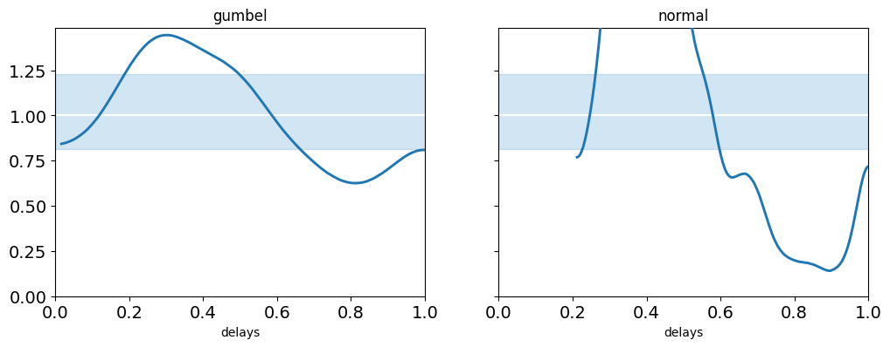
az.plot_compare(compare);/Users/madschr.hansen/Library/Caches/pypoetry/virtualenvs/pymc-experiment-7JkXVX9c-py3.11/lib/python3.11/site-packages/arviz/plots/backends/matplotlib/compareplot.py:87: FutureWarning: Series.__getitem__ treating keys as positions is deprecated. In a future version, integer keys will always be treated as labels (consistent with DataFrame behavior). To access a value by position, use `ser.iloc[pos]`
scale = comp_df["scale"][0]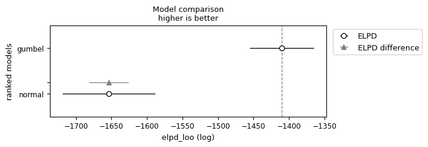
@np.vectorize
def current_revenue(delay):
if delay >= 0:
return 300 * delay
return np.nanposterior_pred = gumbel_delay_trace.posterior_predictive["delays"].values.reshape(-1, 336).copy()def revenue_calculator(posterior_pred, revenue_func):
revenue_per_flight = revenue_func(posterior_pred)
average_revenue = np.nanmean(revenue_per_flight)
return revenue_per_flight, average_revenue
revenue_per_flight, average_revenue = revenue_calculator(posterior_pred,
current_revenue)
average_revenue3929.7925096256663fig, ax = plt.subplots()
ax.hist(revenue_per_flight.flatten(), bins=30, rwidth=.9, color="C2" )
ax.set_yticks([])
ax.set_title("Late fee revenue per flight under current fee structure")
ax.xaxis.set_major_formatter('${x:1.0f}')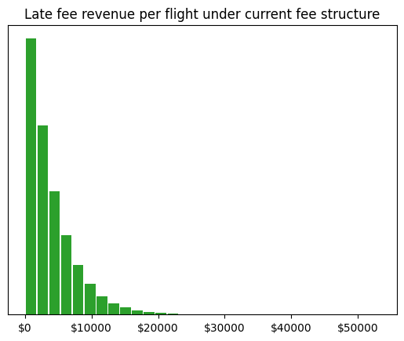
@np.vectorize
def proposed_revenue(delay):
"""Calculate proposed revenue for each delay """
if delay >= 100:
return 30000
elif delay >= 10:
return 5000
elif delay >= 0:
return 1000
else:
return np.nan
revenue_per_flight_proposed, average_revenue_proposed = revenue_calculator(posterior_pred, proposed_revenue)average_revenue_proposed2929.739994157172fig, ax = plt.subplots()
counts = pd.Series(revenue_per_flight_proposed.flatten()).value_counts()
counts.index = counts.index.astype(int)
counts.plot(kind="bar", ax=ax, color="C2")
ax.set_title("Late fee revenue per flight under proposed fee structure")
ax.set_yticks([]);
ax.tick_params(axis='x', labelrotation = 0)
ax.set_xticklabels([f"${i}" for i in counts.index])[Text(0, 0, '$1000'), Text(1, 0, '$5000'), Text(2, 0, '$30000')]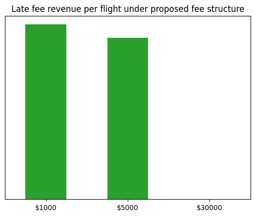
!quarto render flight_delays.ipynb --to htmlpandoc
to: html
output-file: flight_delays.html
standalone: true
section-divs: true
html-math-method: mathjax
wrap: none
default-image-extension: png
metadata
document-css: false
link-citations: true
date-format: long
lang: en
Output created: flight_delays.html